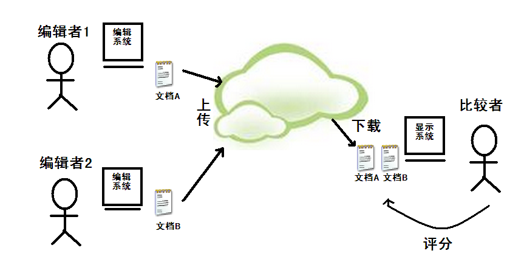

用户先根据自己的需要在云文档库里寻找特定主题的文档，如果无法找到，则在编辑器（编辑系统）中创建一个文档，并上传到云文档库，其他用户可以下载并打分评价，用户则可以查看、阅读这些反馈，进一步的用户间互动体验则留待后续阶段开发。
被下载的文档都集中在本地程序指定的某一文件夹目录中，用户根据需要在主程序的显示系统中打开，或继续在编辑器中编辑。一组编辑好的文档，每个文档对应一个历史主题，同时在主程序中打开即可实现比较。
Kamparë 系统的收费方式在完成开发后的第一阶段以增值服务性收费为主，比如限制非付费用户在本地存储的电子文档数目上限，和/或在显示系统中能同时打开以进行比较的电子文档数目上限。日后待系统成熟，可被推广用作商品图书试阅工具，从而与网络书店等电商机构进行合作。以往的“截图式”试阅模式体现了“有细节无概览”的一种可能性的极端，而成熟的 Kamparë 系统则可以提供完全相反的“有概览无细节”的另一种可能性，亦可在网路上与出版商合作推出某些书籍的“简装速读”版本。
